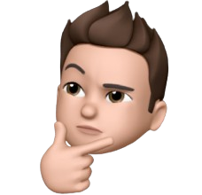
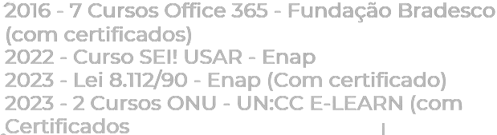

Olá, meu nome é Carlos Souza!
Analista e Desenvolvedor de Sistemas 👨💻
Apresentação
Sou o Carlos, tenho 17 anos e sou apaixonado por tecnologia. Já me formei no ensino médio e estou na Universidade Católica de Brasília, onde mergulho em disciplinas de ciência da computação e engenharia de software. Minha meta é me tornar um programador de destaque, estou sempre buscando aprender mais e contribuir para a comunidade de programadores, ansioso por novos desafios e oportunidades para crescer nesse universo tecnológico. Além disso, minha jornada na UCB tem sido repleta de descobertas. Não me limito apenas às aulas; procuro constantemente por eventos, workshops e palestras que enriqueçam meu conhecimento. Estar imerso nesse ambiente acadêmico dinâmico me proporciona não só aprendizado teórico, mas também a chance de aplicar esses conhecimentos em projetos reais. Estou sempre antenado às novas tendências e ferramentas, buscando adaptar-me às mudanças constantes nesse campo em constante evolução. Acredito que a chave para o sucesso está na combinação de aprendizado contínuo, prática e colaboração com outros entusiastas da tecnologia.
Experiência
Minha experiência no mercado de trabalho é relativamente boa, pois tive apenas um estágio, fui estagiário no INSS (Instituto Nacional do Seguro Social), fazia papel administrativo na maior parte do tempo, também atuei como estagiário de programação na área. Lá eu desenvolvi Apps sozinho utilizando linguagens como Python e Power FX. Também desenvolvi em grupo um chatbot utilizando JavaScript, NodeJs. Fiz também alguns sites utilizando HTML e CSS.
Escolaridade
Com imenso orgulho, finalizei meu ensino médio com uma certeza clara: queria trilhar meu caminho no universo da tecnologia. Com esse propósito em mente, dei o primeiro passo ingressando na Universidade Católica de Brasília, onde embarquei no curso de Análise e Desenvolvimento de Sistemas. Essa transição marcou não apenas uma mudança acadêmica, mas também representou a concretização de um sonho, abrindo portas para uma jornada repleta de descobertas e desafios. A entrada na faculdade foi um marco significativo, onde encontrei um ambiente estimulante para expandir meus conhecimentos em programação, design de sistemas e tecnologias emergentes. Cada disciplina se tornou um novo degrau na minha escalada em direção ao conhecimento mais aprofundado, desde os fundamentos até as aplicações práticas. As oportunidades oferecidas pela Universidade Católica de Brasília têm sido extraordinárias, permitindo-me mergulhar em projetos acadêmicos desafiadores e colaborativos que ampliaram minha compreensão sobre o vasto mundo da tecnologia. Essa transição para a faculdade representa o início de uma jornada empolgante, onde estou ansioso para absorver ainda mais conhecimento e explorar as infinitas possibilidades que a área de análise e desenvolvimento de sistemas tem a oferecer.
Cursos
Detalhes sobre cursos e formação
